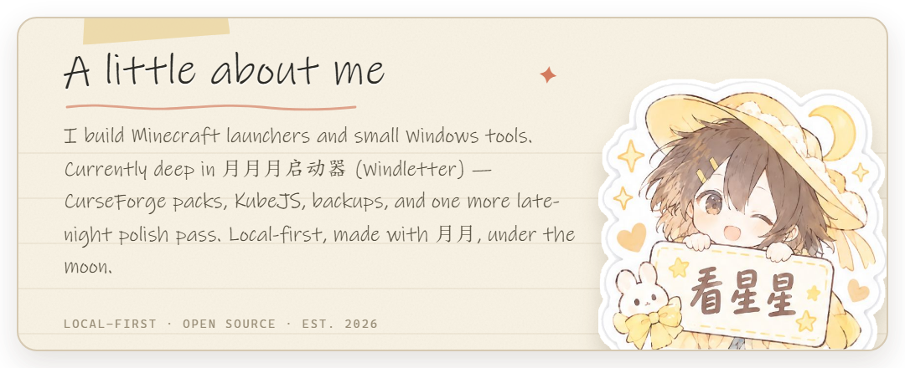
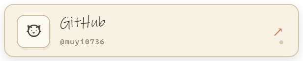
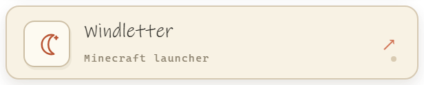
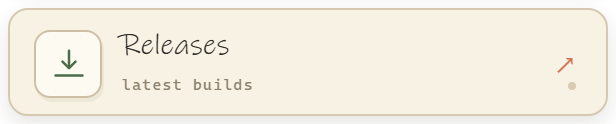
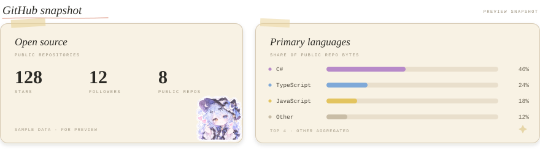

GitHub · Windletter · Releases · 易易 & 月月, under the moon





GitHub · Windletter · Releases · 易易 & 月月, under the moon
Local preview. The sidebar is a mock and its numbers, like the snapshot above, are illustrative; after you push this to muyi0736/muyi0736, the GitHub Action fills the snapshot with live stars, followers, repos and language bytes.